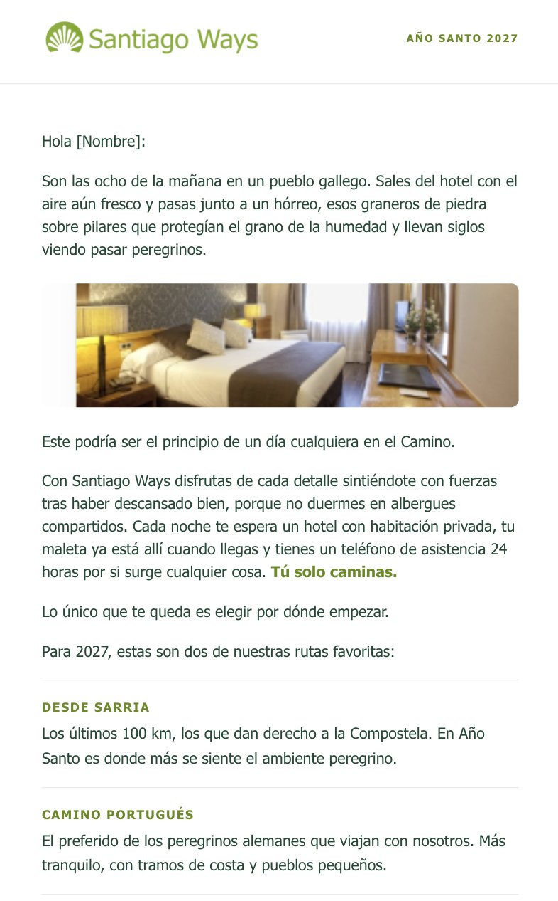
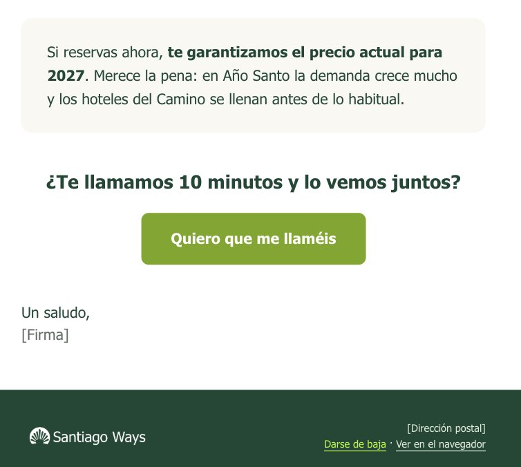
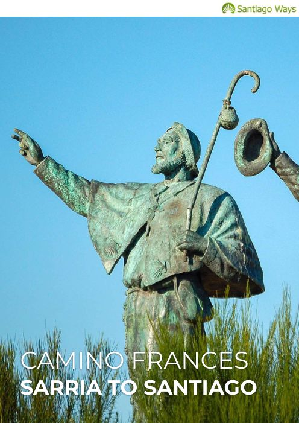
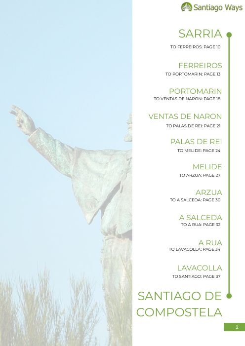
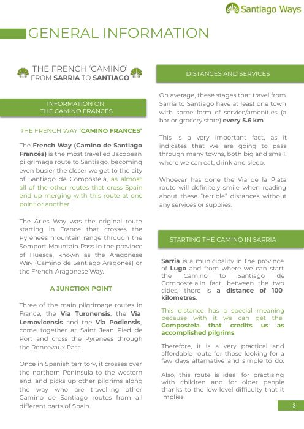
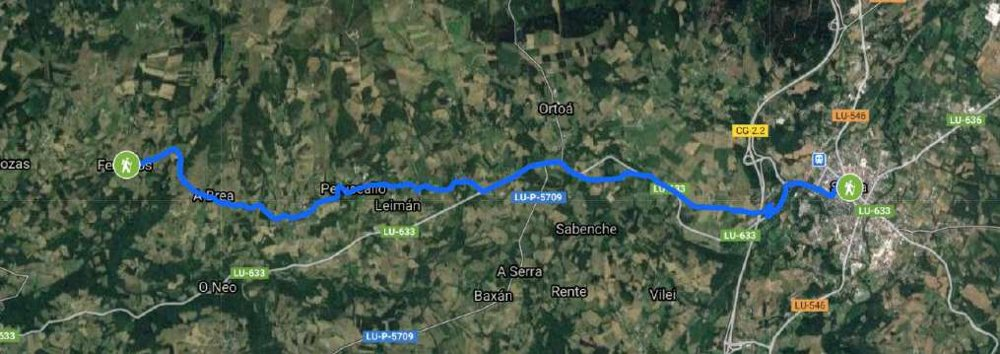
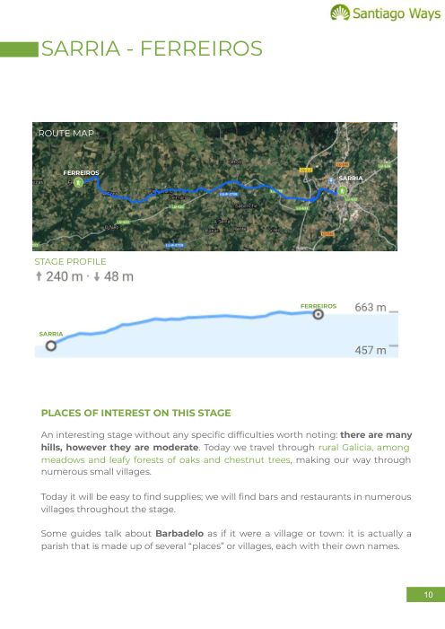
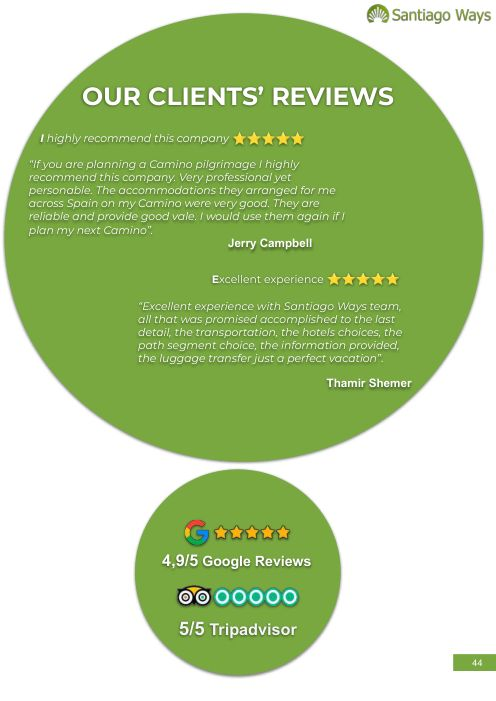

Propuestas para Instagram, reels, email y YouTube construidas solo con lo que ya define el brandbook: Montserrat, el ratio 50 / 30 / 10, el subrayado Ways, la concha como sello y el logo en blanco sobre foto. Son pruebas para evaluar antes de aprobar: los textos y las fotos son provisionales.
Montserrat en todo800 titulares, 700 antetítulos, 400 texto
Blanco 50 · Verde 30 · Sendero 10El blanco manda en las piezas sin foto
Subrayado Ways a -1,5°Una vez por pieza, plano y sin sombra
Concha como selloEntera; en vídeo, marca de agua arriba a la derecha
Degradado solo en cajas135°, de #7AA606 a #628A04
Titulares en minúsculaMayúsculas solo en antetítulos
Instagram · 1080 × 1350
Once posts estáticos, once maneras de usar el sistema
Alternamos foto a sangre, pieza tipográfica en blanco, verde Ways a sangre, cajas verdes grandes y carrusel. Cada post va dentro del marco real del feed para ver cómo compite con la interfaz.
Celebración 100K · versión AMosaico · fondo sendero
santiagoways
Gracias, peregrinos
100K
Gracias por caminar con nosotros
8.912 Me gustasantiagoways Ya somos 100.000 en nuestra comunidad en español. Gracias a quienes soñáis con el Camino, a quienes lo estáis preparando y a quienes ya habéis llegado a Santiago. Seguimos caminando juntos. #SantiagoWays #100K #BuenCamino
Celebración 100K · versión BMojón «Km 100.000»
santiagoways
Gracias, peregrinos
Hemos llegado al km 100.000
Ya sois 100.000 caminando con nosotros en Instagram.
Km100.000
y seguimos caminando
9.340 Me gustasantiagoways En el Camino, el km 100 es el que da la Compostela. Nosotros acabamos de llegar al km 100.000: sois 100.000 en nuestra comunidad en español. Gracias por caminar con nosotros. #SantiagoWays #100K #BuenCamino
Celebración 100K · versión CCarrusel emotivo · 6 diapositivas
santiagoways
1/6
Somos 100K
100.000 gracias
Gracias
Por cada etapa que nos habéis contado
carmen_peregrina¡Buen Camino a todos los que salís esta semana!
♥
jorge.y.anaVolvemos en mayo, ya lo echamos de menos 💚
♥
lucia.caminaGracias por organizarlo todo, fue perfecto
♥
Gracias
Por cada «¡Buen Camino!» en los comentarios
Gracias
Por cada foto con #SantiagoWays
Gracias
Por cada llegada y por cada vuelta a empezar
Comunidad Santiago Ways100K
Gracias por caminar con nosotros
Cuéntanos en comentarios cuál fue tu etapa favorita.
11.208 Me gustasantiagoways 100.000 gracias. Por cada etapa, cada foto y cada «¡Buen Camino!» que habéis compartido con nosotros. Esta comunidad la hacéis vosotros. #SantiagoWays #100K #BuenCamino
Foto a sangre + subrayadoInspiración · ruta
santiagoways Santiago de Compostela
Camino Francés · 2027
Llega a Santiago sin prisas
Cinco etapas desde Sarria, hoteles con encanto y tu equipaje siempre por delante.
1.284 Me gustasantiagoways Los últimos 115 km del Camino Francés, a tu ritmo y con todo resuelto. Buen Camino. #CaminoDeSantiago #CaminoFrancés
Tipográfico en blancoMarca · blanco dominante
santiagoways
Temporada 2027
Tu Camino, sin prisas.
Rutas cuidadas, alojamientos con encanto y todo resuelto.
santiagoways.com
962 Me gustasantiagoways Abrimos la temporada 2027. Elige ruta, fecha y ritmo; del resto nos ocupamos nosotros. #SantiagoWays
Dato en caja verdeEducativo · subrayado en negativo
santiagoways Sarria, Lugo
¿Lo sabías?
100 km
Es la distancia mínima a pie para pedir la Compostela. Desde Sarria son 115 km repartidos en 5 etapas.
2.031 Me gustasantiagoways Por eso Sarria es el punto de partida más elegido del Camino Francés. ¿Ya tienes tu credencial? #Compostela #BuenCamino
Portada de carruselGuía · 6 diapositivas
santiagoways
Guía · Camino a partir de los 60
Caminar a tu ritmo, a cualquier edad
Etapas cortas, días de descanso y tu equipaje de hotel a hotel.
Desliza
1.517 Me gustasantiagoways Seis claves para hacer el Camino con calma. Guárdalo para cuando empieces a prepararlo. #CaminoDeSantiago
TestimonioPrueba social · caja verde Ways
santiagoways Praza do Obradoiro
Lo que nos contáisLlegar juntos al Obradoiro fue el mejor momento del año.Ana y Jorge · Camino Portugués, 2026
3.406 Me gustasantiagoways Gracias por dejarnos acompañaros hasta el final. (Testimonio de ejemplo.) #BuenCamino
Consejo prácticoUtilidad · sin foto
santiagoways
Consejo del equipo
Tu mochila de día, ligera
Agua y algo para picar
Chubasquero plegable
Crema solar y gorra
Credencial del peregrino
Calcetines de repuesto
El resto de tu equipaje viaja de hotel a hotel.
874 Me gustasantiagoways Cinco básicos y nada más. Caminar ligero cambia la experiencia. #ConsejosCamino
Verde Ways a sangreMarca · da color al perfil
santiagoways
Así viajas con nosotros
Rutas cuidadas y todo resuelto
Alojamientos con encanto
Tu equipaje, de hotel a hotel
Atención personal en todo el viaje
1.093 Me gustasantiagoways Tú eliges la ruta y el ritmo. Nosotros nos ocupamos de todo lo demás. #SantiagoWays #CaminoDeSantiago
Caja verde grande sobre fotoProducto · subrayado en negativo
santiagoways Tui, Pontevedra
Camino Portugués
De Tui a Santiago en 5 etapas
118 km entre ríos, viñedos y aldeas gallegas, con todo organizado.
1.358 Me gustasantiagoways La alternativa más tranquila para llegar a Santiago desde el sur. #CaminoPortugués #BuenCamino
santiagoways
318publicaciones
100 milseguidores
204seguidos
Santiago WaysViajes organizados por el Camino de Santiago. Rutas cuidadas, alojamientos con encanto y todo resuelto. santiagoways.com
SeguirMensajeContacto
Rutas
Etapas
Viajeros
Consejos
Vista de perfil
Cómo se lee la cuadrícula
Ritmo foto / blanco / verde. Alternar fotos, piezas en blanco y piezas con mucho verde Ways reparte el color por la cuadrícula: el verde da identidad al perfil y el blanco lo deja respirar.
Recorte 3:4. Instagram muestra la cuadrícula en 3:4 y los posts en 4:5; por eso los titulares nunca tocan los bordes laterales.
Sin marca de agua. Posts y reels no llevan la concha en la esquina: la identidad la dan el color, Montserrat y el subrayado Ways.
Portadas de reel. La primera escena de cada reel está pensada para funcionar también como portada en la cuadrícula.
Instagram · muro verde
Un muro con varios tonos de verde
Nueve posts más donde la marca juega con sus dos verdes: verde Ways de fondo con resaltes en sendero y, al revés, fondo sendero con el subrayado en verde Ways y píldoras blancas. La letra sobre cualquier verde siempre es blanca.
Subrayado en negativoSendero detrás de las palabras clave, sobre verde Ways.
Etiquetas y chipsRutas, novedades y datos cortos en caja sendero.
Números y comillasEl sendero como gráfico, a gran tamaño.
Franja inferiorComo máximo un cuarto de la pieza, para cerrar el mensaje.
Fondo sendero planoCon subrayado verde Ways y píldora blanca para el dato.
Grafito, muy puntualSolo para una novedad o un dato suelto: «Nuevo en 2027», «115 km en total». Nunca más de uno por pieza.
Anuncio en verdeEtiquetas sendero
santiagoways
Reservas abiertas
Temporada 2027 abierta
Elige ruta y fecha con calma.
FrancésPortuguésInglésPrimitivo
1.672 Me gustasantiagoways Ya puedes reservar tu Camino 2027. ¿Por cuál empiezas? #CaminoDeSantiago
Número en caja senderoDato · resalte oscuro
santiagoways Sarria, Lugo
Camino Francés5
etapas de Sarria a Santiago
115 km en total
2.214 Me gustasantiagoways Cinco días, cinco etapas y un final que no se olvida. #CaminoFrancés
Foto + caja verde con etiquetaNovedad · etiqueta grafito
santiagoways
Nuevo en 2027
Rutas con días de descanso
Etapas más cortas y una noche extra donde tú quieras.
1.049 Me gustasantiagoways Para quien quiere llegar a Santiago sin mirar el reloj. #CaminoSinPrisas
Frase de marcaComillas sendero sobre verde
santiagoways
“
El Camino no se corre: se disfruta etapa a etapa.Equipo Santiago Ways
2.508 Me gustasantiagoways Guárdalo para el primer día de tu Camino. #BuenCamino
Carrusel paso a pasoProgreso en sendero
santiagoways
Paso 1 de 5
Elige tu ruta
Francés, Portugués, Inglés o Primitivo: te ayudamos a encontrar la que encaja contigo.
Desliza →
1.331 Me gustasantiagoways Cómo organizar tu Camino en cinco pasos. Desliza. #CaminoDeSantiago
CalendarioMeses clave en sendero
santiagoways
Planifica
¿Cuándo hacer el Camino?
EFMAMJJASOND
Mayo, junio y septiembre: buena luz y temperaturas suaves.
1.886 Me gustasantiagoways Nuestros meses favoritos para caminar. ¿Y los tuyos? #PlanificaTuCamino
Fondo senderoSubrayado verde Ways · píldora blanca
santiagoways
Camino Francés
Tu maleta llega antes que tú.
Sarria · 5-7 días
2.745 Me gustasantiagoways Tú caminas con la mochila de día; tu maleta te espera en cada alojamiento. #CaminoFrancés
Fondo sendero con datosVarias píldoras
santiagoways
Camino Portugués
118 km entre ríos y viñedos
Tui · 6-8 díasNivel suave
1.412 Me gustasantiagoways La ruta más tranquila para llegar a Santiago desde el sur. #CaminoPortugués
Tarjeta blanca con franjaBlanco, verde y sendero
santiagoways
Tu viaje, organizado
Tu Camino empieza cuando tú quieras
Eliges la fecha y nosotros confirmamos cada alojamiento.
Te acompañamos durante todo el viaje
1.168 Me gustasantiagoways Sin prisas y sin preocuparte por nada. #SantiagoWays
Instagram Reels · 1080 × 1920
Reels de marca y UGC dentro de la interfaz real
Cada reel encadena escenas de unos 3 segundos. Activa las zonas seguras para comprobar que ningún texto queda debajo del nombre de la cuenta, la descripción o los botones laterales.
Camino Francés
De Sarria a Santiago en 5 etapas
Tus 5 etapas
Sarria → Portomarín22 km
Portomarín → Palas de Rei25 km
Palas de Rei → Arzúa29 km
Arzúa → O Pedrouzo19 km
O Pedrouzo → Santiago20 km
Total115 km
Tu equipaje te espera en cada hotel
Reels
12,4 mil
318
1.240
santiagowaysSeguir
Los últimos 115 km del Camino Francés, etapa a etapa...
♫ Santiago Ways · Audio original
Interfaz superior
Cuenta, descripción y audio
De Sarria a Santiago
Reel de producto: vende la ruta más reservada con un dato claro y cierra con la promesa de servicio.
0-3 sGancho: titular con subrayado sobre el mojón
3-7 sLas 5 etapas en caja blanca
7-10 sPromesa en caja verde
3 cosas que
nadie te cuenta del Camino
1
No hace falta ser deportista
Etapas de unos 20 km, a tu ritmo y con paradas para disfrutar.
2
Tu mochila puede ser ligera
La maleta viaja de hotel a hotel mientras tú caminas.
3
Vas a querer volver
Reels
28,1 mil
742
5.310
santiagowaysSeguir
¿Cuál te sorprende más? Te leemos en comentarios...
♫ Santiago Ways · Audio original
Interfaz superior
Cuenta, descripción y audio
3 cosas que nadie te cuenta
Reel tipográfico en blanco: el formato lista es el que más se guarda y comparte. Los números van en caja verde.
0-3 sGancho con subrayado animado
3-9 sDos consejos en caja numerada
9-12 sCierre emocional sobre foto
Sobre fondo blanco la interfaz de Instagram (blanca) desaparece; por eso las escenas blancas llevan una franja grafito suave abajo, fuera de la zona de contenido.
Día 5 · Km 0
Lo que se siente al llegar
115 km.
5 etapas.
Un abrazo.
Tu Camino con Santiago Ways
santiagoways.com
Reels
41,7 mil
1.105
8.920
santiagowaysSeguir
Etiqueta a con quién harías el Camino...
♫ Música emotiva · Audio original
Interfaz superior
Cuenta, descripción y audio
La llegada al Obradoiro
Reel emocional de marca: peregrinos reales felices, frases cortas y cierre con el logo vertical en negativo.
0-3 sFoto de llegada y subrayado
3-6 sTres frases en cascada
6-10 sCierre de marca en verde Ways
Hoy somos
en Instagram
Gracias por cada «¡Buen Camino!»
100.000 personas
que sueñan, preparan o recuerdan su Camino con nosotros.
Seguimos caminando juntos
#SantiagoWays
Reels
52,6 mil
2.874
6.410
santiagowaysSeguir
¡Ya somos 100.000! Gracias por caminar con nosotros...
♫ Santiago Ways · Audio original
Interfaz superior
Cuenta, descripción y audio
100K en Instagram
Reel de agradecimiento: contador animado hasta 100K, foto de celebración, mosaico de viajeros y cierre verde con el logo.
0-5 sContador de 0 a 100K sobre sendero
5-9 sLos fuegos del Obradoiro
9-14 sMosaico de viajeros
14-18 sCierre de marca
Lo que nadie te cuentaantes de tu primer Camino 👇
1Estrena las zapatillas antes de salir
2Sal temprano: el Camino a las 8 es otro
3Deja sitio en la mochila para lo que te llevas de vuelta 💚
Guárdalo para tu primer Camino
Hilary · equipo Santiago Ways
Reels
18,7 mil
624
3.905
hilary.camina · santiagowaysSeguir
3 consejos para tu primer Camino que me habría encantado saber...
♫ Audio original · hilary.camina
Interfaz superior
Cuenta, descripción y audio
UGC · Los consejos de Hilary
Hilary habla a cámara como creadora, en colaboración con la cuenta de la marca. Subtítulos en Montserrat, cortes con zoom para dar ritmo y un plano recurso del Camino. La marca solo aparece en la píldora final.
0-3 sGancho a cámara
3-13 sTres consejos con subtítulos
13-16 sLlamada a guardar y píldora de marca
Reels
21,3 mil
842
4.117
santiagowaysSeguir
2027 no es un año más en el Camino: es Año Santo...
♫ Audio original · Santiago Ways
Interfaz superior
Cuenta, descripción y audio
UGC real · ¿Por qué 2027?
Vuestro reel de ejemplo con Hilary: 40 s a cámara, subtítulos palabra a palabra con la palabra activa en verde, titulares de apoyo arriba y gráficos a pantalla completa (el calendario de julio de 2027). Es la referencia para el formato UGC.
0-6 sGancho con titular arriba
6-18 sPor qué 2027 es Año Santo, con calendario
18-32 sPlanifica con tiempo
32-40 sLlamada a pedir presupuesto
Versión comprimida a 720 × 1280 para la página. Para publicar, usa vuestro original.
Before you chooseyour Camino year
Tema de subtítulos · UGC
Subtítulos palabra a palabra
Especificación sacada de vuestro reel «¿Por qué 2027?», para que todos los UGC salgan iguales. Medidas para un vídeo de 1080 × 1920.
Tipografía
Montserrat ExtraBold (800), en mayúsculas
Tamaño
76-84 px de cuerpo (unos 60 px de altura de mayúscula); interlineado 1,2
Color del texto
Blanco #FFFFFF con contorno grafito #1A1A18 de 6 px, por fuera de la letra
Palabra activa
Caja verde Ways #7AA606, letra blanca sin contorno, esquinas de 14 px, margen interior 6 × 20 px. Recta, sin girar
Palabras por pantalla
1 a 3, en una sola línea; como máximo 2 líneas si la frase lo pide
Ritmo
Al ritmo de la voz; cada palabra activa al menos 0,25 s; cambio de grupo sin transición
Posición
Centrado; base del texto al 66-70 % de la altura (y ≈ 1.270-1.340 px), sobre el pecho, nunca sobre la cara
Zona segura
Fuera de los 220 px superiores, los 480 px inferiores y los 140 px de la derecha
Titular de apoyo
Arriba, en mayúsculas, 64 px: primera línea en blanco y la frase clave en caja verde. Solo en el gancho y en los cambios de tema
Emojis
No en los subtítulos; como mucho uno en el titular de apoyo
Sí
Resaltar la palabra que lleva el sentido: años, km, «gratis», nombres
Cortar los grupos donde corta la voz
Mantener la misma altura en todo el vídeo
No
Frases enteras en pantalla
Más de una palabra activa a la vez
Subtítulos sobre gráficos a pantalla completa: ahí manda el gráfico
El brandbook pide titulares en minúscula de frase; en los subtítulos UGC se mantienen las mayúsculas porque es como lo tenéis en producción y se leen mejor a ritmo rápido. Si preferís alinearlo con el brandbook, la misma especificación funciona en minúscula de frase.
TikTok · 1080 × 1920
Tres vídeos con lenguaje nativo de TikTok
TikTok pide menos acabado de anuncio y más formato de la plataforma: respuestas a comentarios, comparativas y POV. Los rótulos imitan las cajas de texto de la app, pero en Montserrat, y la marca entra sobre todo en el cierre, con el verde Ways y el logo. Ritmo más rápido que en Instagram: escenas de 2,5 a 3 s.
Respondiendo a @marta.camina¿Hace falta estar en forma para hacer el Camino?
Spoiler: no 👀
Las etapas son de unos 20 km
Vas a tu ritmo,con paradas para disfrutar
y tu maleta viajade hotel a hotel
Tu Camino con Santiago Ways
santiagoways.com
SiguiendoPara ti
48,3K
1.204
6.912
2.380
Santiago Ways¿Hace falta estar en forma para el Camino? Te responde Hilary 💚 #caminodesantiago #camino #viajar♫ sonido original · Santiago Ways
InicioAmigos+BandejaPerfil
Interfaz superior
Cuenta, descripción y navegación
Hilary responde
Formato de respuesta a comentario: muy de TikTok, cercano y con alguien del equipo dando la cara. Rótulos en Montserrat con cajas tipo TikTok.
0-3 sPegatina de comentario y gancho
3-6 sHilary responde
6-11 sApoyo con imágenes del Camino
11-14 sCierre de marca
Día 1
Día 5
Km 100
Km 0
Lo que cambia en 5 días
no se puede explicar
Tu Camino con Santiago Ways
santiagoways.com
SiguiendoPara ti
112K
3.418
21,4K
9.870
Santiago WaysDía 1 vs Día 5 en el Camino Francés 🥹 ¿Te animas? #caminodesantiago #antesydespues #sarria♫ sonido original · Santiago Ways
InicioAmigos+BandejaPerfil
Interfaz superior
Cuenta, descripción y navegación
Día 1 vs Día 5
Pantalla partida con antes y después: el mojón de los 100 km arriba y la llegada abajo. Es el formato que más se comparte.
0-3 sDía 1 / Día 5
3-6 sKm 100 / Km 0
6-9 sFrase emocional
9-12 sCierre de marca
POV: haces el Caminocon la mochila vacía
Tú solo caminas…
…y tu maleta ya te esperaen el hotel
Así sí 💚
Tu Camino con Santiago Ways
santiagoways.com
SiguiendoPara ti
76,9K
2.051
14,2K
5.630
Santiago WaysPOV: tu maleta llega antes que tú 🧳 #caminodesantiago #pov #viajes♫ sonido original · Santiago Ways
InicioAmigos+BandejaPerfil
Interfaz superior
Cuenta, descripción y navegación
POV: la mochila vacía
Un POV corto y ligero que enseña el servicio estrella (el transporte de equipaje) sin parecer un anuncio.
0-3 sGancho POV
3-8 sCaminar ligera
8-10 sLa maleta en el hotel
10-13 sCierre de marca
En TikTok la zona inferior es más alta que en Reels porque la barra de navegación tapa el vídeo: los textos van siempre en el tercio superior o central.
Email · 600 px
Campaña «Temporada 2027» en tres envíos
Una secuencia de apertura de reservas: inspiración, producto y urgencia amable. Cada envío incluye asunto, preheader y una alternativa para test A/B.
Recibidos Campaña 2027
Tu Camino 2027 empieza aquíSantiago Ways <hola@santiagoways.com>Alternativa B: Ya puedes reservar tu Camino 2027
Abrimos reservas para la nueva temporada. Elige la ruta, la fecha y el ritmo que te apetezcan; nosotros nos ocupamos de los alojamientos, del transporte de tu equipaje y de cada detalle del viaje.
Alojamientos con encantoElegidos uno a uno en cada etapa.
Tu equipaje, de hotel a hotelCaminas solo con la mochila de día.
Atención personalAntes y durante todo el viaje.
Instagram · YouTube · FacebookSantiago Ways · Santiago de Compostela, GaliciaRecibes este email porque te suscribiste en santiagoways.com. Darte de baja
De Sarria a Santiago, etapa a etapaSantiago Ways <hola@santiagoways.com>Alternativa B: Los 115 km más especiales del Camino
Es la ruta más elegida y la más fácil de organizar. Así son los cinco días que te separan del Obradoiro.
1
Sarria → PortomarínAldeas de piedra y el embalse del Miño
22,4 km
2
Portomarín → Palas de ReiLa etapa de los robledales
24,8 km
3
Palas de Rei → ArzúaMelide y su pulpo, parada obligada
28,8 km
4
Arzúa → O PedrouzoEucaliptos y caminos de tierra
19,3 km
5
O Pedrouzo → SantiagoEl Monte do Gozo y la llegada
19,4 km
A tu ritmo: puedes dividir las etapas largas o añadir un día de descanso.
Tu equipaje viaja de hotel a hotel
Tú solo llevas la mochila de día. Al llegar a cada etapa, tu maleta ya te está esperando.
Reservar el Camino Francés
Instagram · YouTube · FacebookSantiago Ways · Santiago de Compostela, GaliciaRecibes este email porque te suscribiste en santiagoways.com. Darte de baja
Mayo y junio son los primeros en llenarseSantiago Ways <hola@santiagoways.com>Alternativa B: ¿Ya tienes fecha para tu Camino?
Son los meses con mejor luz para caminar y los primeros que se completan. Si ya tienes fecha en mente, este es buen momento para reservarla.
Ver fechas disponibles
Nos organizaron todo y solo tuvimos que caminar y disfrutar.Ana y Jorge · Camino Portugués, 2026 (ejemplo)
¿Dudas antes de reservar?
Escríbenos y te responde una persona del equipo, no un robot. Te ayudamos a elegir ruta, fecha y número de etapas.
Hablar con el equipo
Instagram · YouTube · FacebookSantiago Ways · Santiago de Compostela, GaliciaRecibes este email porque te suscribiste en santiagoways.com. Darte de baja
En email, Montserrat se carga como fuente web; Outlook de escritorio la sustituye por Arial, así que el diseño está pensado para aguantar ese cambio.
Email · campaña de viaje
«Preparando tu Camino»: la secuencia después de reservar
Una segunda campaña, esta vez para clientes: confirmación, preparación antes de salir y el email de vuelta. Tono más cercano y personal, con la tarjeta blanca y la franja sendero de tus referencias.
Recibidos Preparando tu Camino
Tu Camino empieza el 12 de mayoSantiago Ways <viajes@santiagoways.com>Alternativa B: Marta, todo listo para tu Camino Francés
Esperamos que el Camino te haya dejado tan buen recuerdo como a nosotros acompañarte. ¿Nos cuentas cómo fue?
Del 1 al 5, ¿cómo valorarías tu viaje?
12345
Tus fotos, en nuestro Instagram
Comparte tu Camino con #SantiagoWays
Cada mes elegimos fotos de viajeros para nuestro perfil. Etiquétanos y cuéntanos tu etapa favorita.
Buen Camino, y hasta el próximo
Instagram · YouTube · FacebookSantiago Ways · Santiago de Compostela, GaliciaRecibes este email porque tienes un viaje reservado con nosotros.
Email · rediseño
Campaña Xacobeo 2027: antes y después
Mismo texto y misma estructura de carta; cambia la forma. Entra una cabecera con foto y titular, los servicios se leen de un vistazo, las rutas pasan a tarjetas con foto, el precio garantizado va en caja verde y el pie pasa a verde sendero, que es el verde oscuro oficial de la marca.
Versión actual


RediseñoUn día cualquiera en el Camino (en Año Santo)Santiago Ways <hola@santiagoways.com>
Año Santo 2027
Xacobeo 2027
Un día cualquiera en el Camino
Hola [Nombre]:
Son las ocho de la mañana en un pueblo gallego. Sales del hotel con el aire aún fresco y pasas junto a un hórreo, esos graneros de piedra sobre pilares que protegían el grano de la humedad y llevan siglos viendo pasar peregrinos.
Este podría ser el principio de un día cualquiera en el Camino.
Con Santiago Ways disfrutas de cada detalle sintiéndote con fuerzas tras haber descansado bien, porque no duermes en albergues compartidos.
Cada noche, un hotel con habitación privada.
Tu maleta ya está allí cuando llegas.
Teléfono de asistencia 24 horas por si surge cualquier cosa.
Tú solo caminas.
Lo único que te queda es elegir por dónde empezar. Para 2027, estas son dos de nuestras rutas favoritas:
Desde Sarria
Los últimos 100 km, los que dan derecho a la Compostela. En Año Santo es donde más se siente el ambiente peregrino.
Si reservas ahora, te garantizamos el precio actual para 2027. Merece la pena: en Año Santo la demanda crece mucho y los hoteles del Camino se llenan antes de lo habitual.
Versión actualCaptura no disponible en el entorno: basado en la imagen que compartiste en el chat.
RediseñoEn 2027 el Camino tendrá algo másSantiago Ways <hola@santiagoways.com>
Año Santo 2027
Para nuestros viajeros · Xacobeo 2027
Vuelve al Camino en Año Santo
Hola [Nombre]:
Tú ya conoces el Camino desde dentro: el cansancio bueno al final de la etapa y esas conversaciones que surgen con desconocidos. En 2027 todo eso tendrá algo más, porque es Año Santo Xacobeo, y el siguiente no llega hasta 2032.
En Año Santo, el Camino tiene un ambiente pleno. Sales temprano y ya hay grupos de peregrinos de medio mundo ajustándose la mochila, y a lo largo del día oyes «¡Buen Camino!» en idiomas que ni imaginabas.
Tú ya eres de los nuestros, y nos haría mucha ilusión que este Camino tan especial también lo vivieras con nosotros.
Viajero frecuente
Si reservas ahora, mantienes el precio actual para 2027. Por supuesto, con tu descuento de viajero frecuente.
Máximo cinco palabras, un único subrayado y la esquina inferior derecha libre para la duración. Sin marca de agua: la miniatura se reconoce por el color y la tipografía.
Camino Francés 2027
Sarria → Santiago
guía completa
18:42
Camino Francés desde Sarria: guía completa de las 5 etapasSantiago Ways 48 mil visualizaciones · hace 2 semanas
Checklist
Qué llevar al Camino y qué no
11:05
Qué llevar al Camino de Santiago (y qué dejar en casa)Santiago Ways 122 mil visualizaciones · hace 1 mes
60+
El Camino, a tu ritmo
14:20
Hacer el Camino de Santiago a partir de los 60: todo lo que necesitas saberSantiago Ways 31 mil visualizaciones · hace 5 días
Km 0 · Obradoiro
Lo que se siente al llegar
8:57
Llegar a Santiago: la emoción de terminar el CaminoSantiago Ways 76 mil visualizaciones · hace 3 semanas
Prueba de legibilidad: las mismas miniaturas a 168 px de ancho, el tamaño de «vídeos relacionados» en móvil.
Miniaturas para los Shorts
Una plantilla de serie, reconocible en la fila del canal: foto a sangre con personas, tarjeta blanca ligeramente girada con el titular en grafito y la palabra clave subrayada, e insignia verde con la cifra o la etiqueta. Todo en el centro: la franja inferior queda libre para el título y las vistas de YouTube.
Camino Francés
5
etapas de Sarria a Santiago
Título y vistas
De Sarria a Santiago en 5 etapas210 mil visualizaciones
Antes de salir
3
cosas que nadie te cuenta del Camino
Título y vistas
3 cosas que nadie te cuenta del Camino402 mil visualizaciones
Obradoiro
Km 0
Lo que se siente al llegar
Título y vistas
Lo que se siente al llegar318 mil visualizaciones
Respondemos
?
¿Hace falta estar en forma?
Título y vistas
¿Hace falta estar en forma para el Camino?96 mil visualizaciones
Equipaje
POV
Tu maleta llega antes que tú
Título y vistas
POV: tu maleta llega antes que tú151 mil visualizaciones
Año Santo
2027
El año para hacer el Camino
Título y vistas
¿Por qué 2027 es un año especial?64 mil visualizaciones
YouTubeBuscar
Rutas, etapas y consejos para tu CaminoNuevo vídeo cada semana
Santiago Ways
@santiagoways · 24,6 mil suscriptores · 86 vídeosViajes organizados por el Camino de Santiago: rutas cuidadas, alojamientos con encanto y todo resuelto. santiagoways.com y 2 enlaces másSuscribirse
InicioVídeosShortsListasComunidad
Camino Francés desde Sarria: guía completa de las 5 etapas48 mil visualizaciones · hace 2 semanas
Te contamos cómo son los últimos 115 km del Camino Francés: etapas, distancias, dónde dormir y qué no te puedes perder entre Sarria y Santiago.
Vídeos
Camino Francés desde Sarria: guía completa de las 5 etapas48 mil visualizaciones · hace 2 semanas
Qué llevar al Camino de Santiago (y qué dejar en casa)122 mil visualizaciones · hace 1 mes
Hacer el Camino de Santiago a partir de los 60: todo lo que necesitas saber31 mil visualizaciones · hace 5 días
Llegar a Santiago: la emoción de terminar el Camino76 mil visualizaciones · hace 3 semanas
Shorts
De Sarria a Santiago en 5 etapas210 mil visualizaciones
3 cosas que nadie te cuenta del Camino402 mil visualizaciones
Lo que se siente al llegar318 mil visualizaciones
¿Hace falta estar en forma?96 mil visualizaciones
Imagen de canal: 2560 × 1440 px con la zona segura central de 1546 × 423 px, donde van el logo y el texto. Avatar: concha blanca sobre verde Ways, que se lee bien incluso a 24 px. Suscriptores, visualizaciones y descripciones, de ejemplo.
YouTube · Motion graphics
Cartelas animadas para los vídeos y Shorts del canal
Seis plantillas en bucle: cabecera, rótulo de persona, dato de etapa, capítulo, llamada a suscribirse y pantalla final. Todas usan las cajas, el subrayado y la marca de agua del isotipo arriba a la derecha.
santiagoways.com
0:04
Cabecera de canal
4 s · La concha aparece y da paso al logo horizontal en blanco con santiagoways.com debajo, sobre verde Ways con degradado.
Guía · Camino Francés
HilaryCoordinadora de rutas en Santiago Ways
0:06
Rótulo de persona
6 s · Etiqueta verde plana y caja blanca con sombra.
Km
Etapa 3 de 5
Palas de Rei → Arzúa
28,8 km7 h aprox.Pasa por Melide
0:07
Dato de etapa · mojón
7 s · Un mojón del Camino sube desde abajo y su placa cuenta los kilómetros que faltan hasta Santiago, de 68 a 39. A la derecha, la ficha de la etapa.
Km
Etapa 3 de 5
Palas de Rei → Arzúa
28,8 km7 h aprox.Pasa por Melide
0:07
Dato de etapa · sin mojón
7 s · La concha, la flecha y la placa de kilómetros aparecen en fila sobre el titular. Overlay oscuro desde la izquierda para que el texto se lea sobre cualquier plano.
Etapa 3 de 5Palas de Rei → Arzúa28,8 km · 7 h aprox. · Pasa por Melide
Km
0:07
Dato de etapa · pie de pantalla
7 s · Toda la información en una barra blanca abajo, sin overlay: el vídeo se sigue viendo entero.
Capítulo 2
Qué llevar en la mochila
0:05
Cartela de capítulo
5 s · Cortinilla diagonal a 135°, la misma dirección del degradado. Subrayado en negativo.
Nuevas rutas cada semanaSantiago WaysSuscribirmeSuscrito ✓
0:05
Llamada a suscribirse
5,5 s · Tarjeta blanca abajo a la izquierda, lejos de la marca de agua y de los controles.
Sigue tu Camino
Rutas, etapas y consejos cada semana.
Suscripción
Último vídeo
Vídeo recomendado
0:20
Pantalla final
Últimos 20 s · Fondo blanco con marca de agua. Las zonas punteadas son los elementos que añade YouTube.
0:08
Mapa de la ruta
8,5 s · Animación del Portugués por la Costa: el trazado avanza de Oporto a Santiago con el contador de kilómetros. Apertura para los vídeos de la serie de mapas.
Somejourneys
stay with you
Camino de Santiago Spain
0:05
Texto sobre vídeo
5,2 s · Sobre vuestro bruto del grupo en el Obradoiro (a cámara lenta y en bucle). Frase en dos líneas: la primera entra palabra a palabra en blanco y la segunda aparece dentro de la caja verde Ways. Debajo, el lugar.
santiagoways.com
0:03
Cierre de Shorts
3,5 s · Vertical 9:16. El logo vertical entra con un pequeño rebote, una línea sendero se dibuja y aparece santiagoways.com, sobre verde Ways con degradado.
Web · home
La home con el brandbook aplicado, sin cambiar su estructura
Rediseño muy sutil: misma arquitectura de una home de agencia (buscador, rutas, cómo funciona, opiniones y blog) con la tipografía, los verdes y los recursos del brandbook. Se puede navegar dentro del navegador y del móvil. Activa los cambios para ver qué se toca en cada zona.
santiagoways.com/es/
ES · EN · FR · DE · ITÁrea de cliente
Diseña tu viaje3
Viajes organizados por el Camino de Santiago5
Tu Camino, sin prisas.12
Rutas cuidadas, alojamientos con encanto y tu equipaje de hotel a hotel. Todo resuelto para que solo tengas que caminar.
Eliges ruta, fecha y ritmoTe ayudamos a decidir cuántas etapas y días encajan contigo.
Reservamos todo por tiAlojamientos con encanto en cada etapa y el transporte de tu maleta.
Tú solo caminasCon tu mochila de día y la tranquilidad de tenernos siempre cerca.
7
Incluido en todas las rutas
Tu maleta llega antes que tú.
Cada mañana la dejas en recepción y la encuentras en tu siguiente alojamiento.
Sarria · 5-7 días
Lo que nos contáis
Viajeros que ya han llegado
★★★★★Llegar juntos al Obradoiro fue el mejor momento del año.Ana y JorgeCamino Portugués
★★★★★Nos organizaron todo y solo tuvimos que caminar y disfrutar.Carmen y LuisCamino Francés
★★★★★Hice el Norte sola y me sentí acompañada en cada etapa.LucíaCamino del Norte
Blog
Prepara tu Camino
ConsejosQué llevar al Camino de Santiago (y qué no)
PlanificaCuándo hacer el Camino: los mejores meses
La CompostelaLos últimos 100 km y cómo conseguir tu Compostela
Titulares en minúscula de fraseDisplay a 64 px en 800, como marca la escala web del brandbook.
Subrayado Ways en el heroUna sola vez, en la palabra que lleva la promesa.
Botón principal en verde Ways planoLetra blanca en negrita, sin degradado ni sombra.
Buscador en caja blancaCon la sombra suave de las cajas (0 8 32, grafito al 12 %).
Antetítulos en mayúsculas700 con +0,15 em; son lo único en mayúsculas.
Tarjetas de ruta homogéneasMisma sombra, enlace en sendero y etiquetas sendero o grafito solo puntuales.
Banda de promesa en verde WaysÚnica caja con degradado 135°, con subrayado sendero y píldora blanca.
Pie en nieblaTexto grafito y gris, sin fondos oscuros.
No he podido abrir santiagoways.com desde este entorno (la red lo bloquea), así que la estructura es una aproximación a la home actual. Con capturas de la web real ajusto el mockup para que los cambios sean exactamente sobre lo que ya tenéis. Opiniones y nombres, de ejemplo.
Dossier · A4 · 44 páginas
Dossier «Sarria to Santiago» rediseñado
Cinco páginas tipo para maquetar todo el dossier: portada, índice, información general, apertura de etapa y contraportada. Con estas plantillas se resuelven las 44 páginas. Mismo contenido en inglés; cambian la jerarquía, los titulares en minúscula de frase con subrayado Ways, los datos en cajas y la ruta como línea con kilómetros. Pulsa «Ver original» para comparar cada página.
PortadaLogo a color · foto enmarcada
Dossier · FR8
Camino Francés
Sarria to Santiago
10 stages · 114 km · the last 100 km to the Compostela

Índice de etapasRuta como línea · km por etapa
Contents
Your route
10 stages to Santiago
1
Sarria → FerreirosPage 10
12,9 km
2
Ferreiros → PortomarínPage 13
9,1 km
3
Portomarín → Ventas de NarónPage 18
13,0 km
4
Ventas de Narón → Palas de ReiPage 21
11,8 km
5
Palas de Rei → MelidePage 24
14,4 km
6
Melide → ArzúaPage 27
14,1 km
7
Arzúa → A SalcedaPage 30
11,3 km
8
A Salceda → A RúaPage 32
6,4 km
9
A Rúa → LavacollaPage 34
11,1 km
10
Lavacolla → SantiagoPage 37
9,9 km
Total114 km
2

Información generalDatos clave en cajas brote
General information
The Camino Francés
Starting your Camino in Sarria
100 kmThe minimum to receive the Compostela
5,6 kmAverage distance between towns with services
LowDifficulty, ideal with children and older travellers
The French Way is the most travelled Jacobean route, and it gets busier the closer we get to Santiago: almost every other route merges with it at some point.
Three of the main routes in France meet in Saint-Jean-Pied-de-Port and cross the Pyrenees through Roncesvalles.
Sarria, in the province of Lugo, is 100 km from Santiago de Compostela. That distance matters: it is what earns you the Compostela as an accomplished pilgrim.
A practical, affordable route for a few days on the Camino.
Good to know
Every stage from Sarria has at least one village with a bar or grocery store every 5,6 km on average.
3

Apertura de etapaDatos clave · mapa · perfil redibujado
Stage 1 of 10
01
Stage 1 of 10
Sarria → Ferreiros
Distance12,9km
Ascent+240m
Descent−48m
DifficultyEasymoderate hills
Rural Galicia among meadows, oaks and chestnut trees. Many hills, all of them moderate, and plenty of villages to stop on the way.

Start · SarriaFinish · Ferreiros
Stage profile
Km 100 marker · MorgadeBars on the way Vilei · A Serra · Morgade · Ferreiros
10

ContraportadaOpiniones · verde Ways
Our clients' reviews
Walked with Santiago Ways
4,9/5Google Reviews
5/5Tripadvisor
Excellent experience with the Santiago Ways team: all that was promised was accomplished to the last detail. The luggage transfer, just a perfect vacation.
Thamir Shemer
Very professional yet personable. The accommodations they arranged for me were very good. I would use them again.
Jerry Campbell
santiagoways.com

Fuera las mayúsculas y la letra finaTitulares en Montserrat ExtraBold en minúscula de frase; mayúsculas solo en antetítulos.
Datos que se leen de un vistazoKm, desnivel y servicios en chips; las cifras clave en cajas brote.
Mapa y perfil de marcaEl perfil de cada etapa se redibuja en verde Ways con los pueblos y kilómetros; el índice va como línea de ruta.
Menos verde de rellenoBlanco dominante; el verde va en cajas, subrayados y la contraportada.
Las fotos, el mapa y el perfil son los del dossier actual. El ascenso y descenso de la etapa 1 (240 m / 48 m) están tomados del perfil original; los kilómetros de cada etapa salen de la ruta del dossier.
Antes de aprobar
Decisiones que estas piezas dejan abiertas
Cosas que el brandbook aún no fija y que he resuelto de forma provisional para poder montar las pruebas.
Slogan y selling line
Siguen «por completar». He usado «Tu Camino, sin prisas.» y «Tu Camino con Santiago Ways», que ya aparecen como ejemplo en el brandbook.
Texto verde sobre blanco en CTA
El brandbook pide CTA blanco con letra verde sobre foto, pero también prohíbe texto en verde Ways. He usado verde sendero (6,4:1) para la letra.
Radio de cajas y botones
No está definido. He usado un redondeo suave (8-12 px en digital). Conviene fijarlo en el bloque 06.
Fotografía
Las fotos son provisionales y varias son de banco de imagen, con riesgo de «posado de catálogo». Conviene sustituirlas por recursos propios antes de publicar.
Testimonios y cifras
Los testimonios, nombres, «me gusta» y visualizaciones son de ejemplo. Las distancias de etapas sí son las reales del Camino Francés.
Motion y audio
Faltan reglas de ritmo, curvas de animación y tratamiento sonoro. Las cartelas proponen entradas de 0,5-0,7 s con salida suave.